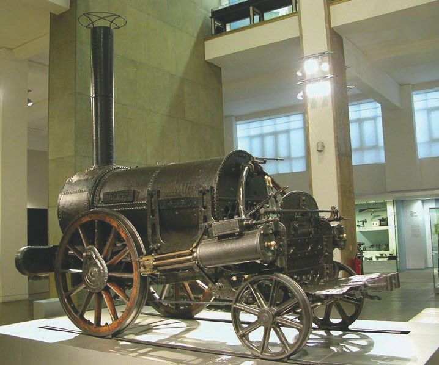
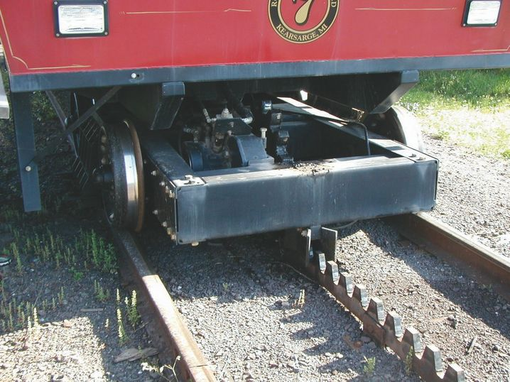

Из истории транспорта с «электрическим сердцем».
Для реализации любого транспортного проекта нужен достаточный спрос со стороны заинтересованных лиц, пассажиров, грузовых и частных перевозчиков. Это один из важных факторов рентабельности и окупаемости. Поэтому актуальные задачи транспортной отрасли основаны на идее рентабельности. Конкуренция в среде транспортной инфраструктуры в сравнении их видов с годами только возрастает. К примеру, на сей день стоимость перевозки одной тонны груза по железной дороге выше, чем грузовым автомобилем. На протяжении всего XIX века и в Европе, и в России использовались различные виды колесного нерельсового транспорта на конной тяге. К примеру, до 1888 года в Австрии были в ходу портшезы (специальные носилки). Современники того времени были свидетелями оригинальных способов нерельсовой тяги, когда лошадь впрягалась между двумя экипажами – тянула один из них и «толкала» другой. И, как это обычно бывает, на развитие всех видов транспорта сильно влияла конкуренция.
В России же история транспорта – особая.
Первая публичная железная дорога в России соединяла Петербург с Царским Селом (сегодня г. Пушкин). Очень быстро ее продлили до Павловска. В этой связи читателю может быть интересна история возникновения популярного в России слова «вокзал». Недалеко от тупика путей в Павловске было построено здание в подражание английскому воксхоллу, что использовался для концертов, ублажения культурных запросов светской публики. От этого здания и ведет происхождение русское слово «вокзал».
К слову, первая железная дорога Петербург-Царское Село имела свою особую колею – 6 футов (1828 мм). Для остальных же дорог был обоснован и выбран единый стандарт – 5 футов (1524 мм). Единый стандарт колеи введен по инициативе строителя Николаевской дороги и в будущем первого министра путей сообщения России П. П. Мельникова, который избавил страну от многих трудностей с перешивкой колеи. Эта колея и ныне используется в Финляндии, большинстве стран СНГ, Афганистане, Монголии и ряде других стран; во всем мире ее называют русской. Железнодорожное движение в России начиналось как левостороннее. Так, в 1853 году началось движение на двухпутном участке железной дороги Петербург-Гатчина в начальной части пути Петербург-Варшава, о которой я намекнул в самом начале. Вскоре именно эта дорога стала одной из самых протяженных в мире. Левосторонним было и движение на железной дороге Москва-Рязань, построенной фон Мекком. Дорога Ленинград-Варшава оставалась левосторонней вплоть до начала Второй мировой войны, что объяснялось необходимостью удобного соединения с польскими железными дорогами. В середине XX века большинство железных дорог как в СССР, так и в мире стало правосторонним, хотя «исторический» участок Москва-Рязань и сегодня остается левосторонним.
В России и Европе принято (типично) правостороннее движение транспортных средств. А вот что касается электрифицированного сообщения…
Сегодня, когда развитая сеть железных дорог в Европе, Украине и России обеспечивается электрической тягой с помощью электровозов, многие уже позабыли о разнице в размерах колеи. Конструируя свой первый паровоз «Ракета» (в переводе на русский), изобретатель Стефенсон был озабочен обеспечением рассчитанной им тяги в топке паровоза. Отсюда и особый размер расстояния по оси между колесами вагонной тележки. В Западной Европе до сих пор существуют исключения: Испания и Португалия сохраняют самую широкую в Европе колею – 1668 мм. В XX веке эти страны таким образом пытались защититься от возможной агрессии со стороны Франции. На стандартную колею в России перешли в 1902 году. Сегодня Афганистан, Монголия, Финляндия, страны, некогда входившие в единый блок СССР, до сих пор имеют колею 1524 мм, называемую «русской».
Утверждения, будто бы следующей – после Царскосельской – железной дорогой в России была Николаевская железная дорога, соединившая Петербург и Москву с началом движения в 1851 году, – не более чем миф. На самом деле в те годы в состав Российской империи входило Царство Польское, на территории которого частично пролегала железная дорога Вена-Варшава, имевшая длину в 493 км и открытая еще раньше Николаевской, в 1845 году. Подтверждение значения этой «забытой» железной дороги увидим в изданном до революции энциклопедическом словаре Брокгауза и Эфрона. Россияне нечасто интересуются этими сведениями, а для поляков эта магистраль теперь имеет ограниченный интерес. Строго говоря, наши сведения о технических успехах в различных странах мира неравномерны. Это касается и технической истории, в частности истории железных дорог, транспорта, да и механизмов тяги.
К примеру, железные дороги как особый вид транспорта возникли менее чем 200 лет тому назад. Тем не менее они имеют богатую историю, да и предшествовавший их строительству период насыщен событиями, которые во многом определили ход развития вида популярного транспорта. Сложная техническая система основывается на стандартах, унифицированных блоках и типовых решениях. На железной дороге к регламентирующим установлениям относятся в основном выбор стороны движения: правостороннее – левостороннее, выбор ширины колеи, выбор цвета сигналов (к примеру, красный – запрещающий движение). Принятая в 1949 году концепция ООН, посвященная дорожному движению, определяет, чтобы транспорт, движущийся в одном направлении, придерживался одной и той же стороны пути. Какая это сторона и для каких транспортных средств сие утверждение предназначено, допускаются ли в пределах одного и того же государства некоторые исключения (разная сторона движения), в этой концепции умалчивается. Правила разных государств в этом отношении весьма разнообразны, а их возникновение имеет свои исторические традиции.
На рис. 1.1 представлен прототип устройства на паровозной тяге изобретателя Стефенсона.

Рис. 1.1. Паровоз Стефенсона
К примеру, в отличие от России, где пересекающиеся линии метро подходят к разным станциям, в европейских странах к одной и той же подземной платформе нередко подходят трамвайные поезда, а иногда и поезда метро, с разных направлений. Помощь пассажирам организована выразительной и доступной информацией.
Возникновение интереса к рельсовому транспорту связано с работами в горных выработках. Давным-давно использовались лежневые дороги, а затем и металлические рельсы. Впрочем, на исходе Средних веков обсуждались различные варианты развития рельсового транспорта, в том числе на основе деревянных рельсов. И это не шутки, ведь когда-то даже рельсы изготавливали из дерева, и вопрос рентабельности строительства дороги и перевозок стоял не по-детски остро. В Европе инженер Бессемер изобрел новый способ получения стали. После этого изготовление стальных рельсов, которые намного надежнее железных и чугунных, перестало быть проблемой. Стальные конструкции также сделались более надежными. В горных работах использовались железные вагонетки, поэтому к началу XIX сведения о рельсовых путях были известны инженерам, и рельсовое сообщение признавалось перспективным. В данной части весьма показателен финский пример. Хотя он может вполне считаться русским, поскольку Великое княжество Финляндское в то время входило в состав Российской империи.
Железная дорога в Финляндии появилась в середине XIX века, и история ее по-своему любопытна. Смена правления в начале века, падение цен на железо, увеличившийся товарооборот, воля к созданию транспортной инфраструктуры – все эти факторы способствовали строительству финских железных дорог. Причем почти 10 лет в середине XIX века рассматривались два варианта совершенствования транспортного сообщения: сеть каналов и железные дороги. За первый вариант выступал Йохан Вильгельм Снеллманн – видный финский государственный деятель. Строить дорогу начали сразу с двух концов – из Хельсинки и из Петербурга, причем самый первый состав прошел в 1862 году по маршруту Хельсинки-Хямеенлинна. В том же году и был основан знаменитый концерн VR Group – «Финские государственные железные дороги». Первый поезд из Санкт-Петербурга в Рийхимяки, что рядом со столицей Финляндии, проследовал в сентябре 1870 года, покрыв расстояние в 372 километра. В 1909 году наладилось железнодорожное сообщение между Гельсингфорсом и Рованиеми в Лапландии. Финские железные дороги строили финляндские инженеры, заказывая железные части мостов и подвижной состав в Англии и Германии. Любопытно, что русское правительство содействовало строительству финской железной дороги, упразднив девять полувоенных «поселенных батальонов» для погашения сбережениями от них железнодорожного займа. Тогда так назывались строительные батальоны. Общая сумма «помощи» составила 2,5 миллиона рублей. Все финны, обслуживающие пассажиров на железной дороге, знали русский язык. Таково было требования закона 1903 года. Еще сто лет назад писали, что железнодорожная сеть Великого княжества Финляндского была разветвленной. Особенно в южной и центральной части. Но только одна линия признавалась доходной: Санкт-Петербург-Гельсингфорс, или даже точнее – ее участок Петербург-Выборг. Этот маршрут был наиболее популярным.
На железных дорогах Европы можно встретить разные типы поездов. Это ICE – интерсити экспресс (самый быстрый поезд), ЕС – евросити (международный экспресс), 1C – интерсити (внутренний экспресс, самый распространённый поезд). EN – евронайт (ночной экспресс), D – дцуг (традиционный скорый поезд), Е – эйльцуг (тоже скорый – эйль = спешить – поезд, но более медленный; в английских версиях расписания он называется «полускорый»), ER – еврорегионал (международный поезд местных сообщений), SPR – спринтер, R – региональный поезд (местное сообщение), RE – региональный экспресс, RB – регионалбан (обычный местный поезд) и, наконец, S – шнельбан (поезд внутригородского и ближнего пригородного сообщения, составляющий одну транспортную систему с поездами метро, о котором сказано выше). Такого разнообразия типов поездов в России нет, и поэтому объяснить тонкости их различий непросто. Все европейские страны малы по размерам и всегда расположены в пределах одного и того же часового пояса. Поэтому поясное время (его за рубежом называют стандартным временем – zonestandardtime (ZST) – в транспортных расписаниях не указывается. Если поезд, паром или автобус пересекает границу и попадает в новый часовой пояс, то в расписании, без всяких оговорок, указывается новое время.
Поезда берлинского эс-бана заслуживают особого представления (S-bann, Schnellbann – быстрое, или скорое, сообщение), это внутригородское сообщение, незначительно выходящее за пределы административных границ городов, каковое у нас бы назвали «экспресс в аэропорт» или «скоростной трамвай». Тут используется не контактный провод, а третий рельс, как и в метро. Поезда S-bann управляются по «системе многократных единиц», то есть скомпонованы из двух мотор-вагонных секций. Типично одна такая секция состоит из четырех вагонов. Пригородное, или, как его здесь называют, «региональное», сообщение уместно сравнивать с S-bann по сути, однако оно имеет и существенные различия: подвижной состав представляет собой четыре вагона второго класса (комфортабельные сидячие места), локомотив – электровоз. В Финляндии для пассажирских междугородных перевозок до сих пор используют мотор-вагонные секции, состоящие из трех вагонов, а на неэлектрифицированных участках железных дорог используется дизельная тяга. Здесь распространены двухэтажные электропоезда Intersity, которые вмещают большое количество пассажиров при относительно небольшой длине самого состава (до 6 вагонов). И конечно же, не станем забывать о комфортабельном экспрессе «Аллегро», уже много лет курсирующем между Санкт-Петербургом и Хельсинки. В Финляндии по всей стране составы идут по однопутной железной дороге с регулируемым реверсивным движением, что для относительно небольшой (по площади и количеству населения сопоставима с Ленинградской областью) страны вполне удобно. Из того, что мне удалось проверить личным опытом в 2016 году, явствует, что электрифицированные железные дороги Швеции, Финляндии, Германии и Австрии интересны пассажиру своей гибкой тарифной системой и скоростным сообщением. Но первой страной в Европе, которая практически решила проблему скоростных пассажирских перевозок, была Италия. Еще в 1940 году тут был создан и запущен в серию грузовой электровоз-локомотив Е-636, который эксплуатировался до 1962 года. Его вес составлял 101 тонну, а длина – чуть больше 18 метров. Сегодня и здесь можно встретить такие поезда, как ES (Eurostar), ЕС-Eurocity, IC–Intecity. Различные варианты местных и пригородных сообщений – это EXPR – Expresso, IR – Interregionale, REG – Regionale, DIR – Direttgo; все эти поезда на электрической тяге имеют 5–7 вагонов, они курсируют и в Швейцарии.
Метросообщение – особая песня в любой стране мира. И практически везде создание метро предварял наземный вид железнодорожного транспорта – трамвай. Рассматривая варианты электрифицированных поездов, начнем с трамваев и небольших поездов для обеспечения внутригородских и пригородных сообщений. И будем иметь в виду, что речь пойдет о типичных составах, а не частных отклонениях и исключениях из правил. Первый в СССР трехдверный трамвайный поезд назывался ЛМ-33, он был создан и запущен в серию в 1933 году в Ленинграде, впрочем, и он являлся прототипом американского трамвая, поскольку в ЛМ-33 (это не скрывалось) была взята за основу конструкция одного из американских вагонов; такие железнодорожные составы тут же получили название «американка». В создании электрифицированных трамвайных линий в Италии принимал участие лично Т. Эдисон еще в конце XIX века. Да и в XXI веке, к примеру, в Милане скоростные трамваи состоят из трех-шести вагонов, поэтому такие составы обоснованно считают здесь «поездами легкого метро». Это определение особенно подходит тогда, когда трамвайные линии выходят за административную городскую черту и углубляются в городские предместья, города-спутники. В отличие от метро, трамвай, конечно же, получает питание от контактного провода, напряжение в сети составляет 600–660 В (в России 550 В). Особенности трамвайного движения в Италии могут заинтересовать читателя, по случаю выезжающего в Европу. Дело в том, что кроме двухрельсовой системы организации пассажирских перевозок здесь есть не только монорельсовая, имеющая свои особенности, но и совершенно уникальная система «зубчатого рельса». Ее начали использовать еще в 1902 году, причем сразу в нескольких местах, отличающихся выраженными подъемами и спусками. Без зубчатого рельса было просто невозможно обойтись, поскольку ландшафт местности предполагает подъем и спуски с крутыми наклонами и в гористой местности. Зубчатые соединения и особые рельсы помогают трамваю подниматься на высоту до 600 метров. К примеру, в г. Триест обычные трамваи перед крутым подъемом на «загородной» дистанции пути прицепляют к специальному локомотиву на электрической тяге, который механически соединен с зубчатым рельсом (см. рис. 1.2).
А в России при подъеме трамвайного состава и поездов до сих пор применяют песочек, посыпаемый в автоматическом режиме перед колесной парой на рельс. Управление посыпкой осуществляется из кабины трамвайного водителя. Это иногда помогает. Да и практически не было альтернативы электрической тяге, поскольку на большой высоте так или иначе воздух «разряжен», ощущается недостаток кислорода, поэтому дизельные двигатели внутреннего сгорания хотя и могут работать, но с дополнительными установками принудительного нагнетания воздуха. В этой связи электрический двигатель невысокой мощности до 120 кВт практически незаменим.

Рис. 1.2. Электрическая тяга с зубчатым рельсом
В Сиднее (Австралия) распространен специальный транспорт на «легких рельсах», его название Variotram, и его относят также к легкому метро. В вагонах такого трамвая установлены 4 мотора по 75 кВт каждый, что обеспечивает составу из трех-четырех вагонов максимальную скорость 80 км/ч. Здесь также распространен такой вид транспорта, как автобус, двигающийся по специальному полотну (с двух сторон ограничение высокими поребриками), он называется трамбу. Отсюда сам автобус или автобусное сообщение назвали трамбусом.
Апробировано несколько перспективных типов пассажирских внутригородских и региональных перевозок. Особенный интерес вызывают промежуточные «комбинации» между метро и трамваями, а также комбинации рельсовых и безрельсовых перевозок в одном виде транспорта. Особенностью инновационных решений в области таких перевозок являлись однотипные салоны, установленные на разных ходовых частях (тележках, колесных парах, моторной группе, тормозных системах, рельсовых путях и т. д.). Такие термины, как легкое метро, метротрам, скоростной трамвай и частично транслор, отчасти известны. Термины преметро, трамбус, рельсобус и даже колеснибус, трамвай, троллейбус и эсбанн могут быть получены прямым переводом с иностранных языков. Все эти действующие решения и инновации немыслимы без электрической тяги. Перспективы развития электрифицированного транспорта в городах огромны, и в этой связи уместно посматривать в сторону Европы, где достигнуты явные успехи в разработке альтернативных видов электрифицированного транспорта и межвидовых комбинаций.
Облегченный подвижной состав на основе трамвая имеет перспективы использования в качестве метро неглубокого залегания с выходом на поверхность. Ибо таков естественный путь уменьшения времени входа и выхода пассажиропотока в скоростном транспорте – вынесение на поверхность станций метро неглубокого залегания. Электротяга мотор-вагонов облегченного метротрамвая (метротрам) позволяет ускоряться на начальном отрезке пути (после начала движения) и развивать необходимую инерцию движения за счет использования силы тяжести железнодорожного состава. Хотя кое-где (Москва) метро и имеет выход на поверхность земли, в отличие от западных стран, его линии не имеют значительного (разнесенного на десятки километров) продолжения дистанции движения. А если и имеют (экспресс в аэропорт), то и он является лишь продолжением метро. В противовес этому, на мой взгляд, необходимо удовлетворять вызовы времени для уменьшения пассажиропотока, равномерного его распределения, увеличения скорости доставки пассажиров, сокращения интервала между поездами, то есть ключ к созданию такого вида электрифицированного транспорта – в «облегчении» метро тремя-четырьмя «легкими» вагонными составами. Кроме обозначенной выше эффективности, в решении данного вопроса предполагается существенно экономить на потребляемой электроэнергии.
Новые варианты видятся в создании и применении многовагонных трамвайных поездов, поэтому опыт Европы интересен. Речь идет о легких скоростных трамвайных поездах комбинированного вида тяги. Если в черте города трамвайные мотор-вагоны питаются от контактного провода, то при выходе за город движение того же состава продолжается от дизеля. Как правило, при «чисто» электрическом питании применяются два источника напряжения – городской трамвайной сети и загородной железнодорожной (напряжение в обеих сетях в России различно). Даже в разных странах «единой» Европы существуют различные подходы к обеспечению электропитания мотор-вагонных секций, и, разумеется, напряжение контактных сетей разное.
В окрестностях Парижа напряжение в электрифицированной железнодорожной сети 600 В постоянного тока и 15 кВ переменного. В Карлсруэ – 750 В постоянного тока и 15 кВ переменного. Во Франции широко применяются внутригородские поезда TVR с питанием от двух штанг (как у троллейбуса), особенностью которого является не только система электроснабжения, но и пневматический привод. Такой трамвайный поезд может отклоняться от железнодорожного пути, подъезжая к остановке, что в российских условиях позволило бы решать проблему быстрой и эффективной очистки от снега направляющего рельса или всех рельс в зимний период года. Пневмотрам – трамвай на шинах – как новый вид рельсового транспорта гибридного типа вообще представляет собой несомненный интерес, поскольку так или иначе трансформированный европейский опыт касается отечественных разработчиков силовых агрегатов и систем транспортировки. Причем мы не лишены возможностей для разработки и автобусов с электропитанием, с металлическим контактными направляющими и монорельса и транслора.
В России скоростной трамвай успешно работает в Волгограде и других городах, где для создания островных платформ на подземных участках пути используется левостороннее движение. Поэтому в обоснование сказанного примеры есть. Принципиально новой возможностью совмещения двух электрифицированных типов пассажирских перевозок – трамвая и метро – является адаптация трамвайных вагонов для метротоннелей, рассчитанных на традиционный (метро) подвижной состав моторных вагонов. Более того, есть возможность относительно бюджетной (недорогой) адаптации питания от контактного провода при наличии третьего рельса. Подобная схема уже давно и успешно действует в столице Норвегии Осло и считается перспективной. Именно такая схема позволяет составам из нескольких трамвайных вагонов (легкий трамвай) «спускать» в тоннели метро, и наоборот, использовать адаптированный подвижной состав метро, или, иначе, пригородного трамвая, в том числе и на пригородных железнодорожных линиях. Эта схема в зависимости от варианта развития и адаптации называется по-разному: преметро, легкое метро, метротрам. И требует облегченного, нового подвижного состава. Движение такого транспорта при пересечении городской черты осуществляется с переходом от «тяжелых» рельсов к облегченным.
Преимущества новой организации, особенно при небольших пассажиропотоках, очевидны. Это большая скорость, менее жесткие требования к путевому хозяйству, унификация подвижного состава. Если предметно говорить о возможных усилиях разработчиков в создании нового (комбинированного) вида транспортных средств, то необходимо обращать внимание на следующие условия и возможные преимущества: наличие в поезде двух одинаковых независимых кабин управления, более высокие по сравнении с городской трамвайной сетью возможности использования напряжения контактных сетей, большая по сравнению с вагонами классического городского трамвая вместимость, наличие специальных остановок на более длинных дистанциях пути (в ближайшем пригороде), чем у городского трамвая, изменение тормозных систем на манер пригородных железнодорожных составов (электричек), иные важные отличия (от городского транспорта и поездов) контроля пассажиропотока на входе и выходе. Чтобы соответствовать вызовам времени со стороны разработчиков силовых электрических систем и устройств в сегодняшних реалиях, анализ зарубежного опыта и разработка (или адаптация) преобразователей энергии для питания нового унифицированного мотор-вагонного хозяйства представляются весьма перспективными.
История электрического трамвая по-своему интересна.
Первый трамвай в Российской империи появился в Киеве. Затем – в Нижнем Новгороде, Курске, Орле и Витебске. Подвижной состав поступал главным образом из Бельгии. Затем появились и английские вагоны. Немногим известно, что в Петербурге первую трамвайную линию построили в 1895 г. Поскольку пути нельзя было прокладывать по городской земле, эта линия, действовавшая в течение ряда лет только в зимнее время, прокладывалась по льду Невы от одного берега к другому. Она пользовалась успехом у горожан. В 1899 г. вагон от конки с электрической тягой испытывали на Невском проспекте, но настоящий трамвай в Петербурге начали эксплуатировать только 28 октября 1907 г. Первая линия пролегала по Садовой улице. Через год в городе действовало уже 9 трамвайных линий. Создание трамвая в Петербурге стимулировало появление производства вагонов в Мытищах и Коломне. Это, несомненно, имело положительное значение для всей страны. Пока отрезки железных дорог были короткими, эксплуатировались 4 класса вагонов. При этом вагоны четвертого класса не имели сидений и крыши. Пассажиры просто стояли на огороженной стенами платформе. Точно так же было организовано движение и в первые годы работы Царскосельской железной дороги. Сравнительно быстро четвертый класс вагонов был ликвидирован.
В послереволюционные годы трамвайные моторные и прицепные вагоны стали выпускаться в Петербурге. Теперь мы знаем, что еще в конце XIX века в Петербурге и в Москве эксплуатировались окраинные линии, где на рельсах конки или электрического трамвая двигались небольшие паровозы, к которым прицеплялось несколько пассажирских вагонов. В Москве такие линии действовали в районе Петровского парка и на Воробьевых горах. Просуществовали они недолго. В Петербурге одна линия пролегала от клиники Вилие на Выборгской стороне до Лесотехнической академии. Вторая начиналась в районе Николаевского (ныне Московского) вокзала и шла по берегу Невы примерно до деревни Мурзинки. Линия эксплуатировалась и в первые послереволюционные годы.
В 1869 году 22-летний Джордж Вестингауз (сегодня это имя мы знаем как известную электротехническую фирму) предложил первую версию воздушного тормоза для железнодорожного транспорта. Ему понадобилось несколько лет на доказательство эффективности своего изобретения, которое он постепенно совершенствовал. Это изобретение решило основные проблемы, связанные с торможением поездов. Модифицированный тормоз Вестингауза и поныне широко и повсеместно применяется на железных дорогах.
Да и известный Томас Эдисон начинал свою трудовую деятельность железнодорожным кондуктором. Затем он перешел в телеграфисты, где, без преувеличения, прославился быстротой передачи сообщений. В те годы телеграфист, сидящий на ключе, занимал весь канал связи: встречные сообщения передавать было нельзя, так как два ключа на одном проводе мешали друг другу. Изобретение Эдисона – дуплексная телеграфия – позволяло одновременно передавать два сигнала навстречу друг другу. Это изобретение было важным для железнодорожной сигнализации.
Во все времена из-за влияния экономических причин разработчики стремились максимально стандартизовать подвижной состав наземных трамваев и вагонов легкого метро (за рубежом). Это делалось, чтобы в случае необходимости использовать поезда метро в качестве трамваев. Тем была достигнута высокая стандартизация подвижного состава: колесных тележек, тормозов и т. д. Особенности разработок заключались в требованиях к допустимой крутизне наклона пути. Сложилась и система наименований. Вагоны одной серии обозначались одной и той же буквой – моторные прописной, а прицепные – строчной, к примеру Кип. Долго стандартным считался трехвагонный состав с конфигурацией N-n-nl, где использовались легкий и тяжелый прицепной вагоны. Питание вагонов серий U, U1, U11, а также серий V/v осуществляется от третьего рельса. Вагоны трамвая и одной из линий метро с питанием от контактного провода относятся к сериям Е6/с6 и Т в международной классификации. Поезда серии Т имеют низкий пол (18 см над уровнем земли). Они используются в вариантах Т-Т-Т-Т или Е6-с6-Т-с6-Е6. Среди трамваев этой серии есть сочлененные секции даже из 5–6 вагонов. Вот так «плавно» – с помощью увеличения скорости и вагонов – можно из трамвая проследить путь к метро.
Слово метрополитен греческого происхождения. В греческом языке слово «метрополис» означает «главный город», «столица». К слову, англичане часто называют метро underground, а американцы subway. В обоих случаях это переводится как «подземка». Примерно то же название – Untergrundbahn – подземная железная дорога – имеется и в немецком языке. Такое полное название используется в немецком разговорном языке редко. Практически официальным названием является U-Bahn (у-бан). Синий прямоугольник с большой белой буквой U обозначает входы в метро. Однако если мы посмотрим на карты или транспортные схемы больших немецких городов, например Кёльна или Бонна, то увидим на этих картах те же значки, хотя метро в нашем понимании в этих городах отсутствует. Оказывается, что термин U-Bahn используется также для обозначения подземного трамвая. Подземный трамвай в Германии отличается от метро и подвижным составом – это обычные вагоны трамвая, и питанием: напряжение подается с помощью контактного провода, а не от третьего рельса, как в обычном метро. И тем не менее мы не должны забывать, что русские инженеры активно участвовали в развитии железных дорог; в России были и есть свои изобретатели-железнодорожники, электротехники, имена которых нередко забывают обыватели, – прежде всего это братья Черепановы, Ярцев, Фролов. Ни одно изобретение не возникает из ничего, и предшественников любой технической новинки часто отыскать не очень трудно. Это тем более просто в тех случаях, когда спор идет о технических понятиях без использования точных определений. Из относительно современных примеров можно сказать и о том, что несколько лет назад в Петербурге объединение «Ижорские заводы» начало выпуск тележек с раздвижными колесами. Апробация быстрой адаптации колесных пар к разным колеям железной дороги прошла в Калининграде, единственном российском городе, к которому и подходит европейская колея. Этим было значительно сокращено время пути.